Nucleo Educativo San Martin de Iquiaca
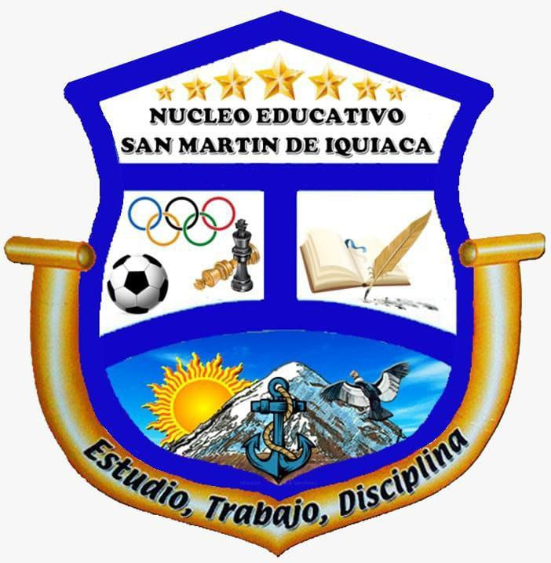
Lic. Edgar Raúl López Quispe DIRECTOR
Sr. Belzu Cari Chino CONSERGE
Lic. Victoria Mamani Mamani MAEP
Lic. Roberto Laura Mamani MAEP
Lic. Hermógenes Chávez Mamani MATEMÁTICA
Lic. Efraín Condo Apaza MATEMÁTICA
Lic. Orlando Gutiérrez Achata COMUNICACIÓN Y LENGUAJE
Lic. Orlando Villca Flores CIENCIAS SOCIALES
Lic. Ximena Mollericona Apaza FÍSICA - QUÍMICA
Lic. Rolando Yujra Ramos BIOLOGÍA - GEOGRAFÍA
Lic. Juan Carlos Mendoza Quispe EDUCACIÓN MUSICAL
Lic. Melby Uchurinca Tapia EDUCACIÓN FÍSICA Y DEPORTES
Lic. Roger Huanca Torrez TTE. SISTEMAS INFORMÁTICOS
Lic. Jhonny Quispe Rojas TTE SISTEMAS INFORMÁTICOS
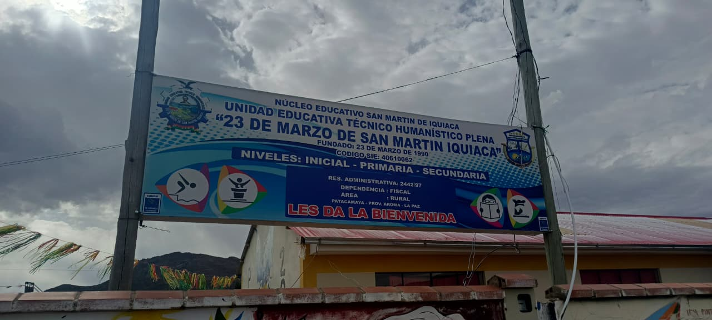
"La Unidad Educativa 23 de Marzo de San Martin Iquiaca, es una institución educativa Plena, que oferta el Bachillerato de Técnico Humanístico en su especialidad Sistemas Informáticos, el cual nos ofrece una educación tecnológica y científica, que juega un papel fundamental dentro la formación del educando en su desarrollo del aprendizaje y su formación integral"
Lograr una excelente formación humana de calidad y calidez incluyendo en ellos la práctica de valores y desarrollo en el pensamiento crítico reflexivo e indagador de cambio que demanda la sociedad.
Ser una institución académica e investigación de referencia nacional en el ámbito de la educación estudiantil descentralizada, reconocidas por su calidad educativa, pertinencia territorial, compromiso con la investigación y activa contribución al desarrollo de la comunidad.
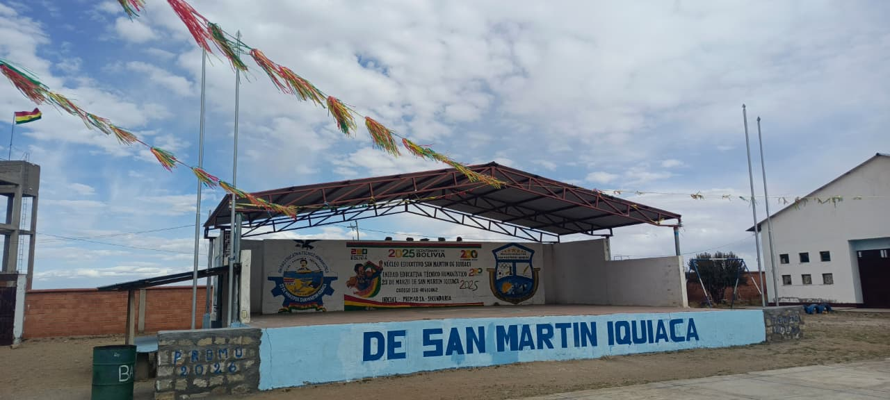
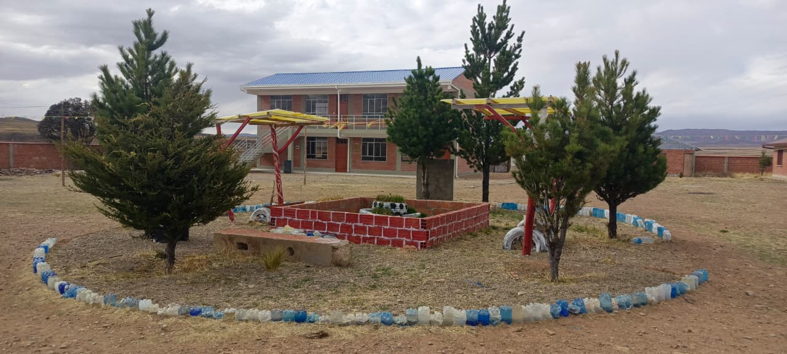
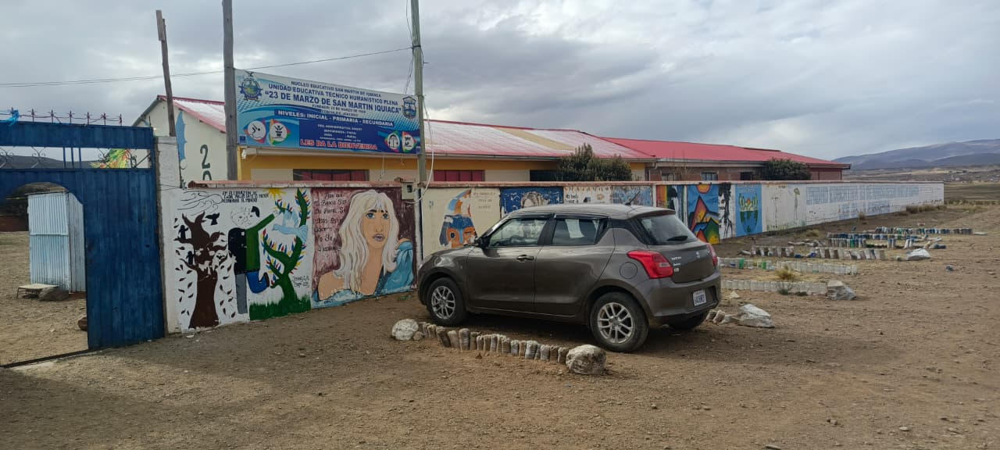
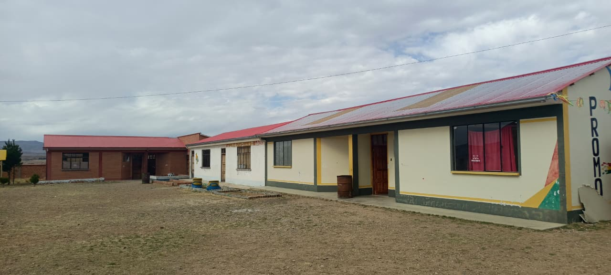
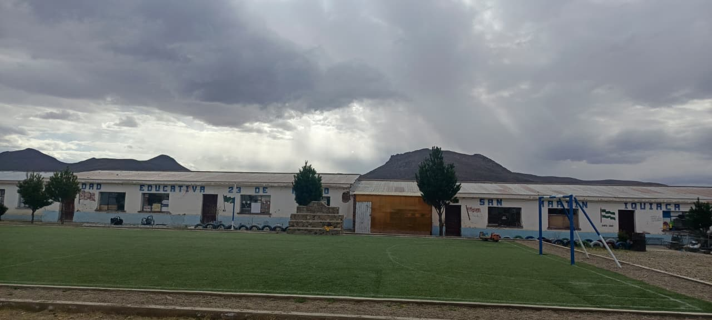
¿El porqué del nombre?, en el año 1997, en magna asamblea todas las autoridades originarias, políticas, educativas, realzando el acto conmemorativo de la fecha 23 de Marzo, usurpación y pérdida de nuestro litoral boliviano, aprovechando esa fecha nuevamente reformularon el nombre oficial y actual de Unidad Educativa 23 De Marzo de San Martin Iquiaca, en base a estos antecedentes se inició los procesos de trámites para el legal funcionamiento. en el mismo año con la agilización de los procesos de trámites de parte de las autoridades educativas y locales se logró adquirir la R.M. N° 2442/97, para el legal funcionamiento del Nivel Secundario, que hasta ese entonces era administrada bajo la Dirección del Núcleo Educativo Franz Tamayo Chiaraque.
Cumple con la malla curricular oficial del Ministerio de Educación de Bolivia (Matemáticas, Lenguaje, Ciencias Naturales, Ciencias Sociales, Física, Química, etc.).
En la Unidad Educativa 23 de Marzo, el deporte es el motor que une a la comunidad estudiantil, cultivando la disciplina, la salud y el compañerismo en cada cancha.
La formación abarca el soporte técnico de computadoras, fundamentos de redes de datos, introducción al desarrollo de software/programación, herramientas de ofimática avanzada.
Cuenta con colecciones de textos escolares oficiales, libros informativos, narrativos y argumentativos fundamentales para las materias del área humanística (como Comunicación y Lenguajes).
La Unidad Educativa 23 de Marzo de San Martin Iquiaca, está ubicada al oeste de la Ciudad Intermedia de Patacamaya, al pie del Cerro Iquiaca, fue creado en la década 1970, con el nombre de Escuela de San Martin Iquiaca, en el lugar denominado Wari Phuju, que significa fontanela de la vicuña, de la Comunidad San Martín de Iquiaca; como educación regular con los grados: Primero, Segundo y Tercero del Ciclo Intermedio, perteneciente al Núcleo Escolar “Chiaraque”, Supervisaría Zonal del Tólar.
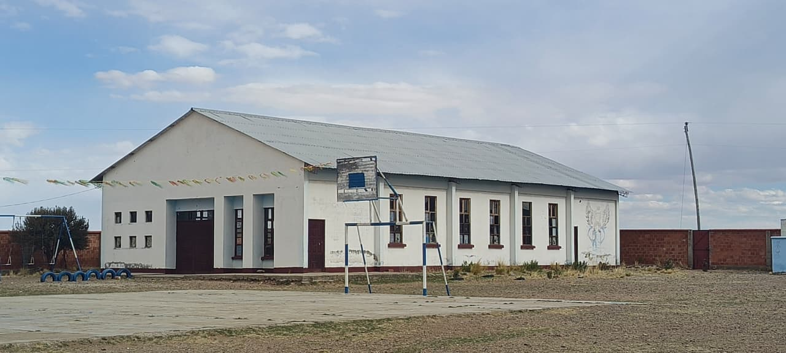
Algunas materias mas destacadas de esta unidad educativa son
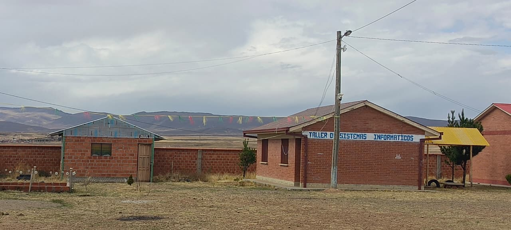
Esta materia Técnica se distribuye de forma progresiva entre 4to y 6to de secundaria, enfocándose en hardware, software, programación y redes.
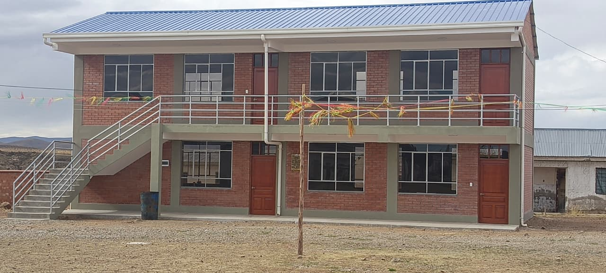
Abarca el desarrollo del pensamiento lógico, integrando la aritmética, el álgebra, la trigonometría analítica y el cálculo elemental aplicados a contextos socioproductivos.
Estudia las leyes del universo y los fenómenos de la naturaleza desde una perspectiva científica y experimental, vinculada estrechamente al entorno tecnológico.
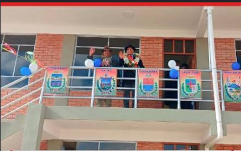
Las autoridades municipales realizaron la entrega oficial de cuatro nuevos ambientes escolares para el beneficio de los estudiantes de la unidad educativa en el área rural de Iquiaca.
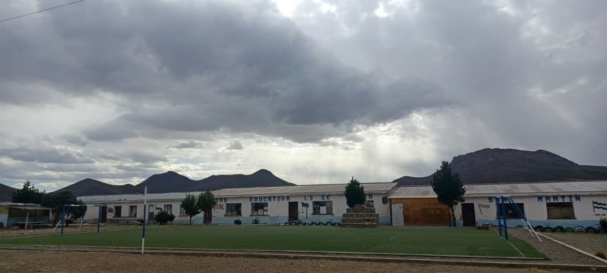
El gobierno local asumió el compromiso formal para gestionar e iniciar el proyecto de construcción de un tinglado e infraestructura complementaria para la institucion.
Ante rumores y reclamos en el sector educativo sobre un posible recorte al modelo BTH, el Ministerio de Educación emitió un comunicado oficial que garantiza la continuidad total del Bachillerato Técnico Humanistico.